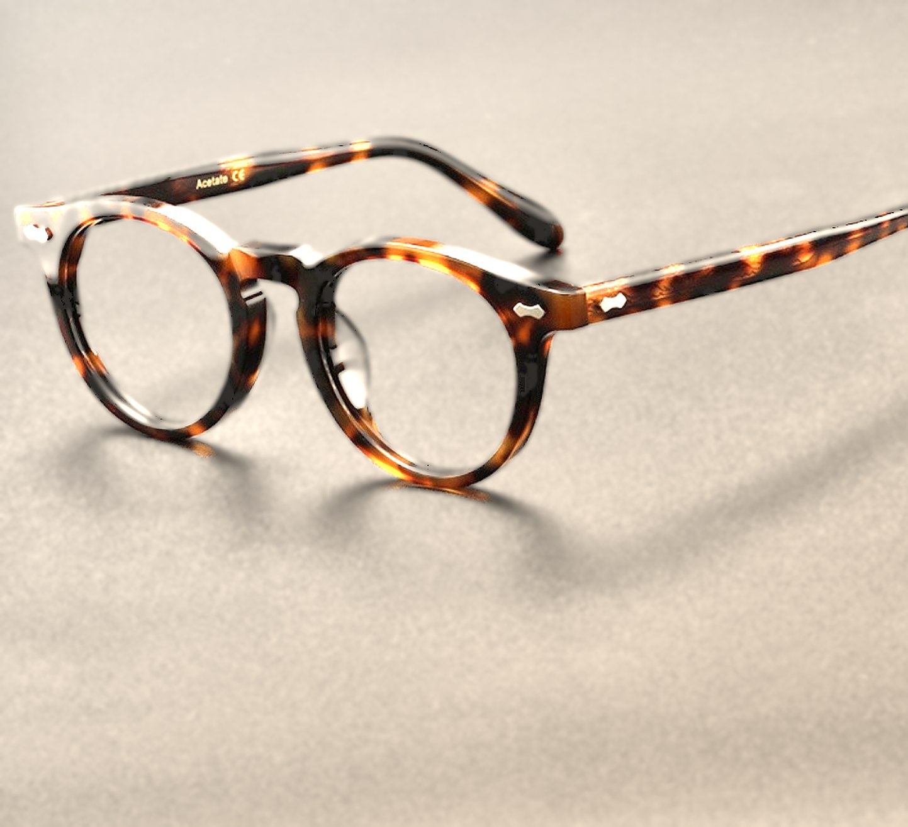

Material
Cellulose-Acetat aus Italien
Hypoallergen, warm in der Hand und über Jahre nachpolierbar. Die Farbe sitzt im Material, nicht auf der Oberfläche.
Neu · Panto No. 01
Italienisches Cellulose-Acetat, drei Tage trommelpoliert, mit silbernen Ziernieten.
Handwerk
Jede Luxlens beginnt als Platte aus gegossenem Acetat. Zweiundsechzig Arbeitsschritte später sitzt sie so selbstverständlich auf deiner Nase, als wäre sie immer schon da gewesen.

Acetat wird aus Baumwollfasern gewonnen und in Blöcken gegossen. Weil jede Platte anders geschnitten wird, trägt keine Panto No. 01 dasselbe Schildpatt wie eine andere.
Details
Material
Hypoallergen, warm in der Hand und über Jahre nachpolierbar. Die Farbe sitzt im Material, nicht auf der Oberfläche.
Gewicht
24g
Fassung ohne Gläser. Spürbar leicht, auch nach zehn Stunden.
Scharnier
5Gelenke
Warm in das Acetat eingeschossen statt geklebt. 20.000 Öffnungen im Test.
Politur
72Std.
In der Holztrommel mit Bambusspänen und Polierpaste, danach von Hand nachpoliert.
Größe
47 □ 21 – 145
Gläser
Superentspiegelte Kunststoffgläser mit Hartschicht und UV400-Schutz, auf Wunsch mit Blaulichtfilter. Gefertigt nach deinem Rezept, eingeschliffen in unserem Atelier.
Vom Block zur Brille
01
Wir wählen jede Acetatplatte nach Zeichnung und Tiefe aus und lassen sie vier Wochen ruhen, bis sie formstabil ist.
02
Front und Bügel werden aus der Platte gefräst. Die Glasnut entsteht in einem Zug, auf einen Zehntelmillimeter genau.
03
Die Front wird erwärmt und über eine Form gebogen, damit sie dem Gesicht folgt. Danach sitzt der Steg.
04
Drei Tage in der Trommel, dann von Hand am Schwabbelrad. So entsteht der tiefe Glanz ohne Lack.
05
Scharniere, Nieten, Gläser. Jede Brille wird einzeln ausgerichtet und geprüft, bevor sie das Atelier verlässt.
Ziehen zum Drehen
Konfigurator
Havana · Klassisches Schildpatt
ab 289 €inkl. MwSt. · kostenloser Versand
Eine Form, vier Acetate. Jede Fassung wird in Handarbeit gefertigt und nummeriert.
Versichert, im Lederetui mit Putztuch.
Passt nicht? Wir holen sie ab.
Und Nachpolieren ein Leben lang.
Sehtest und Anpassung in Hamburg.